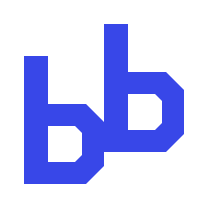

Research the workflow.
Understand the task and its constraints. Improve the way models, tools and people work together.
AI R&D / Workflows / Product engineering
Claude-powered workflows.
Better products, built faster.
We research and optimize AI workflows and harnesses using Claude models — helping us build technology products for our customers with speed, care and a focus on quality.

BBuidl AI Lab is a startup focused on the systems around AI: the workflows and harnesses that turn model capabilities into practical product development.
We combine R&D with hands-on engineering, using Claude models to build technology products for customers. A harness is the surrounding setup — context, tools, execution and feedback — that helps a model work effectively on a task.
Understand the task and its constraints. Improve the way models, tools and people work together.
Connect technical choices to the product a customer needs, from the first idea to implementation.
Shorten the path to a working product while keeping quality and human review part of the process.
R&D and product engineering, connected.
Claude models at work inside the workflow.

Claude + harnessResearch how context, tools and feedback can help Claude models work more effectively on product development tasks.
Optimize how tasks move through model-assisted development, tools and review, with speed and quality as shared goals.
A customer need, turned into working software.
Apply workflow and harness improvements to technology products built around customers’ requirements.
Diagrams illustrate our areas of work. They are not live AI outputs, customer case studies or performance benchmarks.
Our working principle: learn through making,
then be honest about what works.
Define the customer’s product requirements, priorities and constraints before choosing the workflow.
Bring Claude models, context and tools together in a harness suited to the development task.
Review working iterations against product requirements. Look for errors, gaps and opportunities to improve.
Feed lessons back into the product and the workflow, improving how the next iteration gets built.
Two parts. One shared purpose.
The Assembly mark.
Tell us what your customers need.
Let’s explore how to build it.